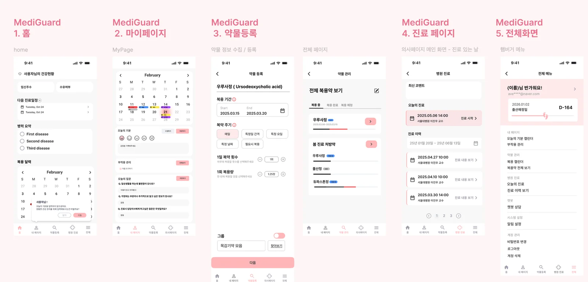
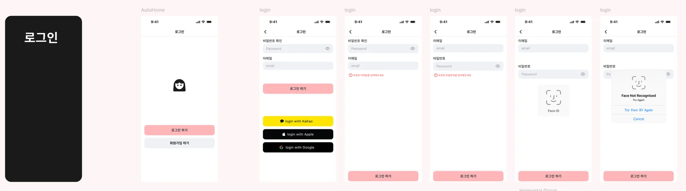

개요
- 환자가 부작용·기분·진료 일정을 기록하고 관리하는 React Native 앱
- 다단계 회원가입, Face ID 로그인, 홈 캘린더, 부작용 기록 관리 화면 구현
화면


기술 스택
React NativeTypeScriptReact Hook FormContext APIAxiosSecureStoreFigma
주요 기능 · 구현
부작용 기록 CRUD
- 부작용 등록·수정·삭제
- Axios 인스턴스로 POST·PATCH·DELETE 요청 모듈화
에러 처리 표준화
- 서버 응답 에러, 네트워크 에러, 인증 만료(AUTH_EXPIRED)를
handleApiError하나에서 같은 형태의 에러 객체로 통일 AxiosError<SideEffectResponse>제네릭으로 서버 응답 타입을 지정해 런타임 에러를 줄임
기술 선택 이유
Context API + React Hook Form
- 여러 페이지로 나뉜 회원가입 입력값을 전역 상태로 관리
- 복잡한 폼의 상태 변화를 한눈에 파악
Axios + SecureStore
- Axios: 서버 에러·네트워크 문제·로그인 만료를 공통 함수 하나로 처리
- SecureStore: Face ID 설정값, 로그인 토큰 등 민감 정보를 암호화 저장소에 보관
회고
로그인 · 회원가입
- Face ID 설정은 로그인 직후에만 뜸. 설정 화면에서 켜고 끄는 메뉴는 못 만듦
- 인증 실패 시 일반 로그인으로만 보냄. 권한 허용 방법 안내는 없음
transformSignupData로 서버 형식을 맞췄지만 필드가 늘수록 함수가 길어짐 → 다음엔 Mapper로 분리- 회원가입 중간에 나가면 입력값이 사라짐
홈
- 정보가 없을 때 안내 문구만 표시. 진료 일정 등록으로 바로 가는 버튼은 없음
환자 페이지 · 부작용 관리
sort(() => Math.random() - 0.5)는 요소가 많아지면 편향이 생긴다는 걸 알게 됨 → Fisher-Yates 셔플로 바꿔야 함- 기분·부작용 데이터는 리스트로만 보여줌, 월간 그래프는 못 만듦
- 에러는 화면에서만 처리, Sentry 같은 수집 도구는 연동 안 함
- 수정·삭제 시 서버 응답을 기다린 뒤에야 화면이 바뀜